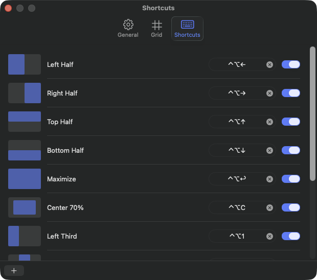
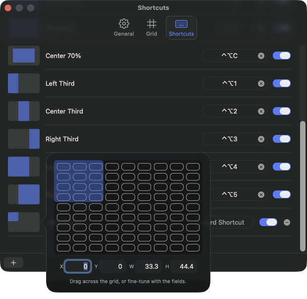
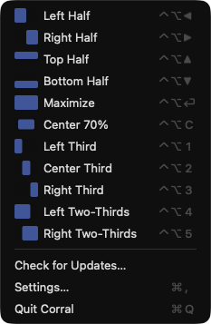

Corral
Snap your Mac windows into place, from the keyboard or the menu bar.
Download for macOSRequires macOS 14 (Sonoma) or later. Free.

Sensible defaults
Eleven ready-to-use layouts with Magnet-style hotkeys, set up the moment you launch.

Infinite customization
Draw any region on the grid or dial in exact fractions. Shortcuts aren't limited to presets, and they don't change when you resize the grid.

Always a click away
Every layout lives in the menu bar too, so you never need to remember a shortcut.
Support
Corral is free and fully functional. Donations are entirely optional, one-time, and unlock nothing; they just support development. If it earns its keep, buy me a:
Coffee Beer DinnerDonations are voluntary and non-refundable. Questions or a problem with a payment? Email stephen@corralapp.org and I'll make it right.